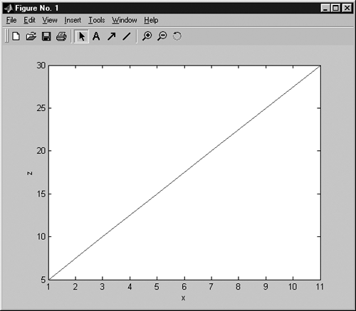
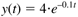
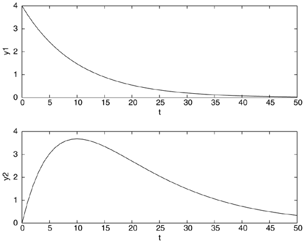
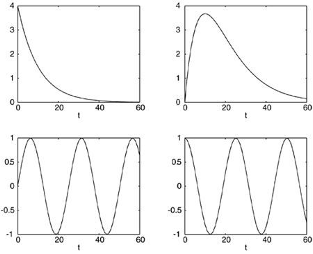

| [ Team LiB ] |
|
M1.5 PlottingMATLAB has many nice graphics capabilities. Here, we will illustrate standard two-dimensional plots. First, generate two vectors for plotting » x = 1:2:11; » z = 5:5:30; For a standard solid line plot, simply enter » plot(x,z) and Figure M1-2 appears. Axis labels are added by selecting "Insert" and specifying X label or Y label. Alternatively, in the command window you can use the following commands (perform this):
» xlabel('x')
» ylabel('z')
Figure M1-2. Example plot. For more plotting options, type » help plot If we wish to plot discrete points, using + as a symbol, we can use the following (perform this): » plot(x,z,'+') Notice that a new plot appears in the place of the previous one. You can generate a new figure by entering figure(n), where n is any integer, before entering new plot commands. Consider now the following equation:  We can plot this for a vector of t values using two simple commands, » t = 0:1:50; » y = 4*exp(-0.1*t); and we can obtain a plot by entering in the command window (perform this) » figure(2) » plot(t,y) Notice that we could shorten the sequence of commands by entering (perform this) » plot(t,4*exp(-0.1*t)) To perform element-by-element multiplication of two vectors or arrays of the same size, we can use the .* command. We can plot the function y(t) = t·e–0.1t by using (perform this)
» figure(3)
» y = t.*exp(-0.1*t);
» plot(t,y)
» xlabel('t')
» ylabel('y')
axis('square') will place the plot in a square box, while axis('normal') will change back to a normal aspect ratio. You can also explicitly set the upper and lower bounds on the plot with axis([xlow xhigh ylow yhigh]) For this example, we would use » axis([0 50 0 4]); Multiple curves can be placed on the same plot in the following fashion (perform this). » plot(t,4*exp(-0.1*t),t,t.*exp(-0.1*t),'--') The subplot command can be used to make multiple plots, as illustrated in Figure M1-3.
» subplot(2,1,1), plot(t,4*exp(-0.1*t)), xlabel('t'),ylabel('y1')
» subplot(2,1,2), plot(t,t.*exp(-0.1*t)), xlabel('t'),ylabel('y2')
Figure M1-3. Use of subplot feature. Here, subplot(i,j,k) means that there are i "rows" of figures, j "columns" of figures, and the current plot is the kth figure (counting left to right and top to bottom). The following is an example of a four plot sequence shown in Figure M1-4:
» t = 0:1:60;
» subplot(2,2,1),plot(t,4*exp(-0.1*t)), xlabel('t')
» subplot(2,2,2),plot(t,t.*exp(-0.1*t)), xlabel('t')
» subplot(2,2,3),plot(t,sin(.25*t)), xlabel('t')
» subplot(2,2,4),plot(t,cos(.25*t)), xlabel('t')
Figure M1-4. Use of subplot feature. To return to single plots, simply enter subplot(1,1,1). |
| [ Team LiB ] |
|